Поиск помогает найти определённую запись по всем элементам в рамках одного приложения. Осуществить поиск можно несколькими способами:
- указать название элемента;
- отфильтровать записи по системным и пользовательским свойствам, а также задачам, связанным с элементом;
- создать более сложный запрос с использованием языка EQL365 (ELMA365 Query Language). Так вы можете задать детальные условия поиска, применяя функции и специальные операции.
Способы поиска можно комбинировать. Если вы укажете несколько параметров, то сможете сохранить запрос как фильтр и использовать его для будущих поисковых операций.
Поиск по названию
Чтобы начать поиск, откройте страницу приложения и введите запрос в поле поиска в верхней части окна. Можно указать полное название элемента или его часть без учёта регистра.
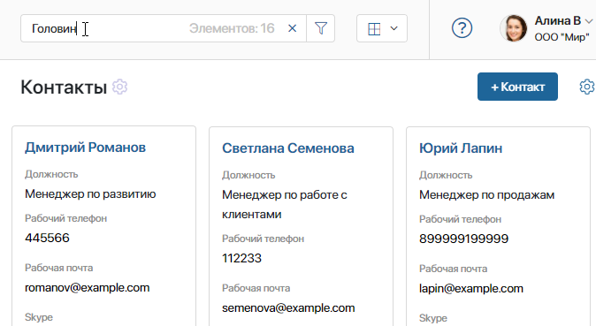
Нажмите клавишу Enter на клавиатуре. На странице отобразятся элементы приложения, в названиях которых присутствует введённое значение.
В строке поиска вы увидите, сколько всего элементов найдено. В настройках приложения вы можете выбрать, каким образом показывать число совпадающих элементов в строке поиска. Можно выбрать точное или примерное количество, а также отключить отображение, чтобы результат поиска загружался быстрее.
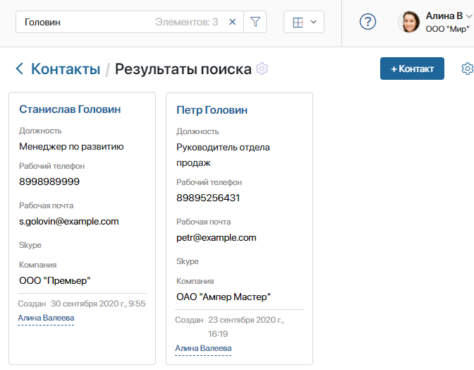
Чтобы очистить поиск, нажмите на крестик в правом углу поисковой строки или клавишу Esc на клавиатуре.
Полнотекстовый поиск
Полнотекстовый поиск осуществляется аналогично поиску по названию. Чтобы свойство приложения участвовало в полнотекстовом поиске, в настройках свойства необходимо установить флажок Полнотекстовый поиск.
Поиск по параметрам
Для уточнения поиска можно использовать параметры элементов приложения. Чтобы максимально сузить результаты, можно указать несколько параметров сразу.
Кроме того, такой поиск можно использовать при заполнении полей на формах создания или редактирования элемента приложения. Подробнее об этом читайте в статье «Поиск по параметрам на форме элемента приложения».
Чтобы перейти к поиску по параметрам, на странице приложения нажмите значок фильтра в строке поиска.
В открывшейся форме доступен поиск по основным и системным полям приложения, а также по задачам, связанным с элементом. Кроме того, вы можете составить запрос на языке EQL365 — указать сложные условия поиска, чтобы получить наиболее точные результаты.
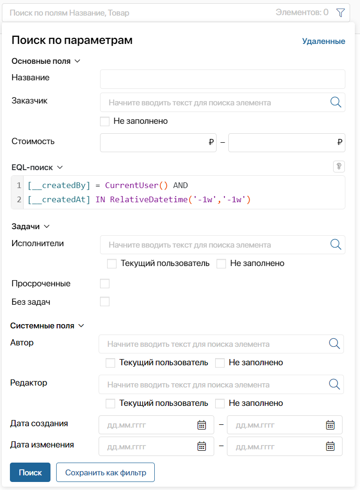
- Основные поля — это пользовательские свойства приложения, для которых на этапе настройки формы приложения включена опция Поиск и сортировка по полю. Обратите внимание, поля типа Приложение отображаются на форме поиска только у пользователей c доступом к данному приложению. Также в группе основных отображается поле Статус, если в приложении настроены статусы. При этом сортировать элементы можно и по финальным, скрытым статусам. Для удобства результаты поиска по статусам отображаются на странице в виде таблицы;
- EQL-поиск — составьте запрос на языке EQL365 (ELMA365 Query Language) и укажите критерии для сложной выборки данных. Запрос формируется с учётом разработанного синтаксиса.
Для обращения к свойствам используются их коды. Условия поиска задаются с помощью операций и функций. При этом можно указать несколько критериев в одном запросе, используя логические связки. Составлять запрос можно с помощью опции автозаполнения. Выпадающее меню с доступными аргументами вызывается комбинацией клавиш Ctrl + Пробел.
Например, вы можете найти все компании, которые совершили заказы на определённую сумму и в адресе которых указан город Москва. Подробнее об этом способе поиска читайте в статье «Поисковые запросы на языке EQL365»;
- Задачи — поиск осуществляется по задачам, связанным с элементами приложения, то есть назначенным в ходе бизнес-процесса или через виджет Связанные задачи. Подробнее об этом читайте в статье «Поиск по задачам». Указать можно следующие параметры:
- Исполнители — укажите ответственного за задачи, назначенные на элементы приложения;
- Просроченные — в результате поиска отобразятся элементы приложения, по которым закреплены задачи с истёкшим сроком исполнения;
- Без задач — отметьте эту опцию, чтобы при поиске отобразились элементы приложения, по которым не было назначено задач.
- Системные поля — поля, добавленные по умолчанию в каждое приложение. Вы можете выбрать:
- Автор — пользователь, создавший элемент приложения;
- Редактор — пользователь, который вносил изменения в элемент приложения;
- Дата создания — дата создания элемента, можно интервал дат с ... по ... . За начало календарного дня принимается момент времени, соответствующий 00 часам 00 минутам 00 секундам. Таким образом, чтобы найти элементы, созданные за один день, например, за 1 января 2022 года, укажите интервал с 01.01.22 по 02.01.22;
- Дата изменения — дата изменения элемента, можно задать интервал дат с ... по ... . За начало календарного дня принимается момент времени, соответствующий 00 часам 00 минутам 00 секундам.
После заполнения полей нажмите кнопку Поиск.
Чтобы сбросить параметры и снова увидеть все доступные элементы, в строке поиска нажмите на крестик.
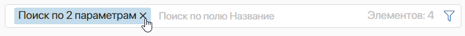
Особенности поиска по полям приложения
Для полей различных типов предусмотрены дополнительные возможности поиска.
- Поля типа Приложение — вы можете выбрать сразу несколько значений. Тогда в результате отобразятся все элементы приложения, у которых в указанном поле находится хотя бы одно из перечисленных в поиске значений. Например, на странице приложения Компании вы можете указать в поиске несколько значений поля Контакты. Тогда в результате отобразятся все компании, у которых хотя бы один контакт совпадает с указанными.
- Поля типа Пользователи — вы можете найти пользователя, начав вводить в строку поиска его имя, адрес электронной почты или логин. Имена пользователей могут отображаться с фамилией или с фамилией и отчеством. Отображение настраивается на уровне компании администратором системы.
Также можно использовать поиск по параметрам, нажав значок лупы, например, искать пользователя по должности в оргструктуре, группе и т. д.
Кроме того, для поля доступна опция Текущий пользователь, которая подставляет ваше имя в выбранное поле. Например, таким образом вы можете найти сделки, за которые являетесь ответственным, или договоры, где указаны согласующим.
- Опция Не заполнено — доступна для полей типа Пользователи и Приложение. Выберите её, чтобы в результате поиска отобразились элементы приложения с незаполненными данными. Например, заказы без ответственного за них сотрудника или сделки без указанного контакта для связи.
- Поля типа Число — поиск для этих полей осуществляется в диапазоне. Так, чтобы найти все элементы со значением 2 в выбранном поле, укажите диапазон [2;2]. Если вы указали только одно число, например, 2 — в первой ячейке, поиск осуществится по диапазону [2;infinity].
Равнозначность Е и Ё при поиске
Буквы е и ё могут учитываться при поиске как равнозначные. Для этого в системе нужно активировать фича-флаг collector_enable_equivalentYoE. При использовании поставки SaaS администратор системы обращается к менеджеру ELMA365, в поставке On-Premises — выполняет настройки самостоятельно. Подробнее об этом читайте в статьях «Изменение параметров On-Premises Enterprise» и «Изменение параметров On-Premises Standard».
Опция применяется при поиске:
- по названию на странице приложения;
- по параметрам с типами данных Строка и Ф. И. О. на странице приложения;
- в полях с типами Приложение и Пользователи на форме элемента приложения;
- с использованием операций
LIKEиLIKEFв запросах на языке EQL, а также в скриптах и в поисковых запросах при работе с Web API.
Обратите внимание, равнозначность букв е и ё не используется при поиске в разделе Компания.
Опция «Удаленные»
В правом верхнем углу окна Поиск по параметрам отображается фильтр Удаленные. Нажмите на него, чтобы просмотреть элементы, которые были скрыты со страницы приложения при их удалении.
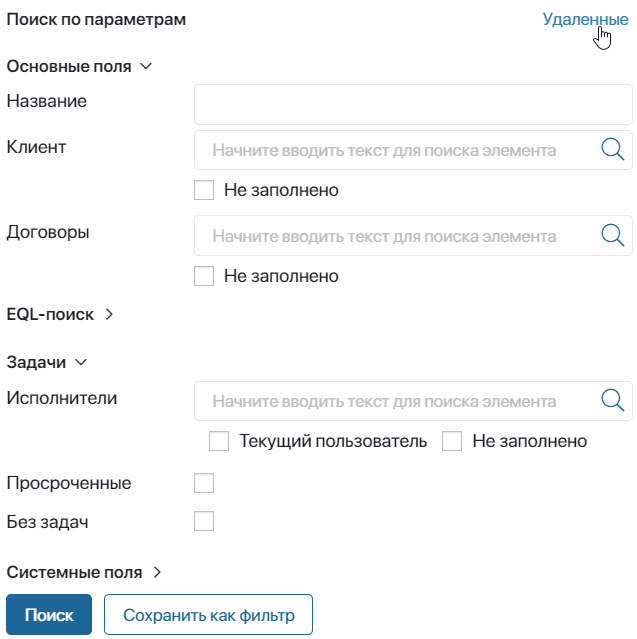
Если необходимо продолжить работу с удалёнными элементами, вы можете вернуть их на страницу приложения. Для этого откройте карточку элемента и добавьте на неё кнопку Восстановить. Подробнее об этом читайте в статье «Управление кнопками в карточках элемента приложения».
Использование фильтров
Параметры поиска, которые вы планируете использовать многократно, можно сохранить как фильтр. В этом случае вам не нужно каждый раз выбирать поля — достаточно нажать на название фильтра.
Фильтры бывают двух видов:
- Общие — это фильтры, которые создает администратор. Они отображаются у всех пользователей;
- Личные — это фильтры, которые создают сами пользователи. Другим пользователям они не видны.
Как создать фильтр
Откройте окно поиска, укажите параметры и нажмите кнопку Сохранить как фильтр.
В появившемся поле введите название фильтра и нажмите Сохранить.
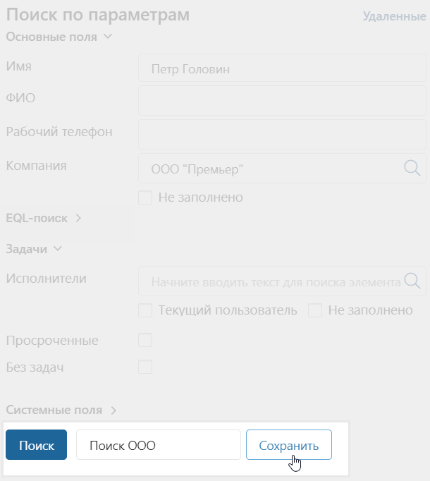
Настроенный фильтр появится на боковой панели окна расширенного поиска на странице приложения, в рамках которого был создан.
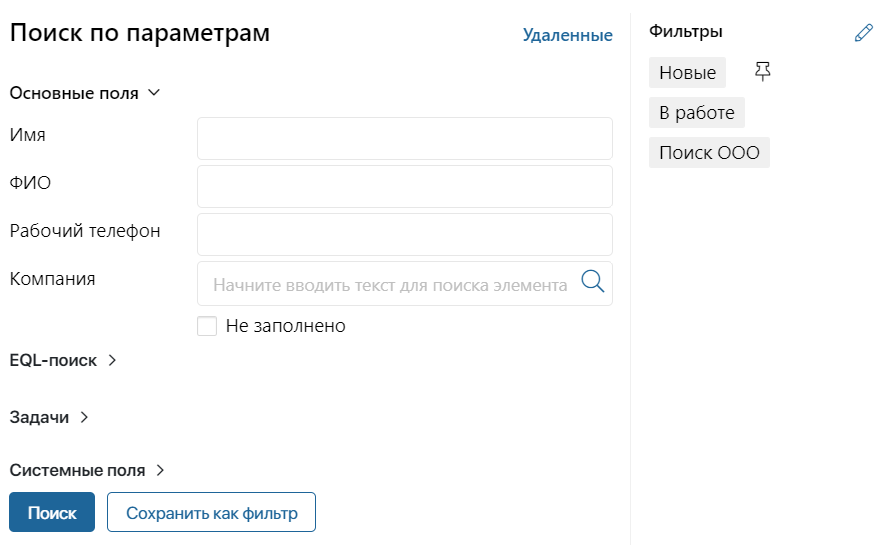
Первыми в списке идут общие фильтры, под ними — ваши личные фильтры.
Вы можете удалять или переименовывать фильтры. Для этого нажмите на значок карандаша в правом верхнем углу окна поиска. Введите новое название фильтра или удалите его, нажав на значок корзины.
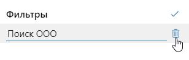
Чтобы сохранить внесённые изменения, нажмите значок  .
.
Как использовать фильтр
Чтобы применить фильтр, нажмите на его название. В списке элементов приложения отобразятся записи, которые удовлетворяют параметрам поиска. Можно одновременно применить фильтр и полнотекстовый поиск. Дополнительно вы можете использовать поиск по названию — он будет осуществляться только по элементам, соответствующим выбранному фильтру.
Как закрепить фильтр
Вы можете закрепить ранее созданный фильтр. В этом случае, в следующий раз, когда вы откроете приложение, на его странице отобразятся элементы, соответствующие параметрам поиска.
Чтобы закрепить фильтр, наведите курсор на его название, затем нажмите на значок 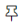. Повторное нажатие открепляет фильтр. Закрепить можно только один фильтр.
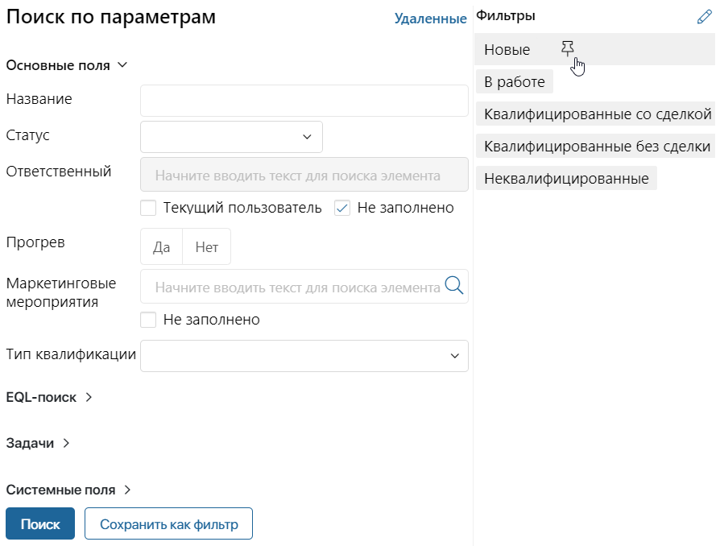
Пользователи, входящие в группу Администраторы, могут закрепить общий фильтр, который будет применяться у всех пользователей. Если пользователь ранее закрепил другой фильтр, поиск будет осуществляться по нему.
Как сбросить фильтр
Для сброса фильтрации в строке поиска нажмите крестик рядом с названием фильтра.
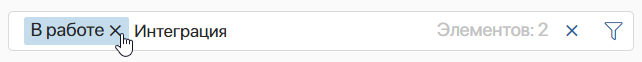
Также фильтр сбрасывается при нажатии на название приложения в левом меню.
Сбросить можно как применённый вручную, так и закреплённый фильтр.
Если одновременно с применением фильтра вы использовали полнотекстовый поиск, поисковая строка не очищается — поиск происходит по всем доступным элементам приложения.